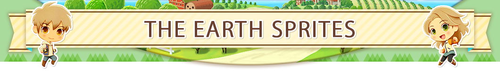
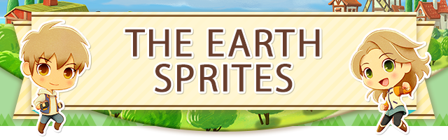
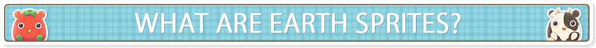
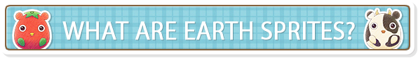
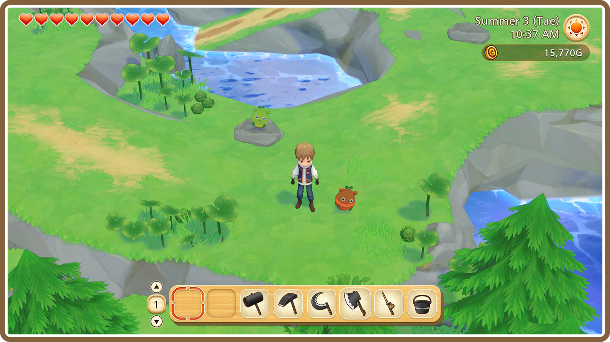
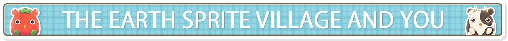
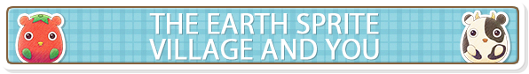

 
 
As you develop your farm, you'll eventually run into mysterious creatures known as Earth Sprites. You'll meet two types of Earth Sprites along the way: the larger Leader Sprites and the smaller Follower Sprites. Once you meet Navi-sprite, you'll be able to travel to the Earth Sprite Village whenever you'd like. Just speak with Navi-sprite next to your house, and away you go!

- Visiting Special Locations
-
Aside from the Earth Sprite Village, Navi-sprite can guide you to several magical destinations once you've discovered them! Progressing through the game and developing your farming skills will allow you to travel to a number of special locations.
Gathering Follower Sprites
By chopping trees, breaking rocks, or harvesting crops, you might come across some tiny Follower Sprites. These little guys are at their best when put to good use through Manager Sprite back at the Earth Sprite Village.
 
At the Earth Sprite Village, you can speak with Manager Sprite in the village to manage and assign your Follower Sprites, talk with Boss Sprite to access the Sprite Shop, or receive special spoils from the other Leader Sprites.

The Earth Sprites' Spoils
You can assign Follower Sprites you've found to Leader Sprites using Earth Sprite Management. The Follower Sprites will contribute to the village's productivity, and the Leader Sprites will give you a split of the spoils as thanks for helping out. The items you'll get depend on the Leader Sprite, but the more Follower Sprites they have, the better the rewards. After assigning your Follower Sprites, you'll need to wait a day in order to get your share, so be patient!
- Finding More Sprite Leaders
-
Progressing through the game will give you access to the shrine in Olive Town's forest. You can take the Sprite Points you've earned from finding Follower Sprites and use them to bring more Sprite Leaders to the village. More Sprite Leaders means even more spoils to earn!
Boss Sprite's Shop
Boss Sprite resides in the back of the Earth Sprite Village by the large tree, carefully watching over the rest of the Sprites. The Sprite Coins you receive with your spoils can be given to Boss Sprite in exchange for special rewards. If you need to release any animals, Boss Sprite can also take those animals into his care.